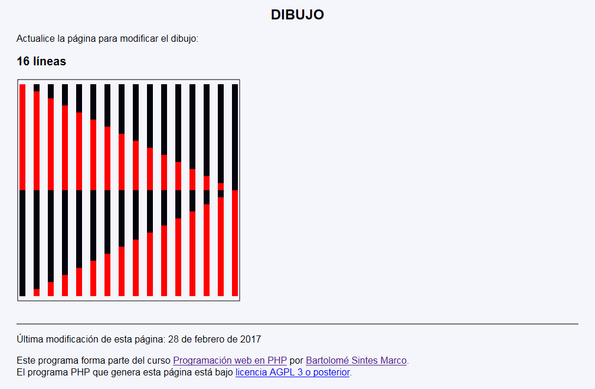
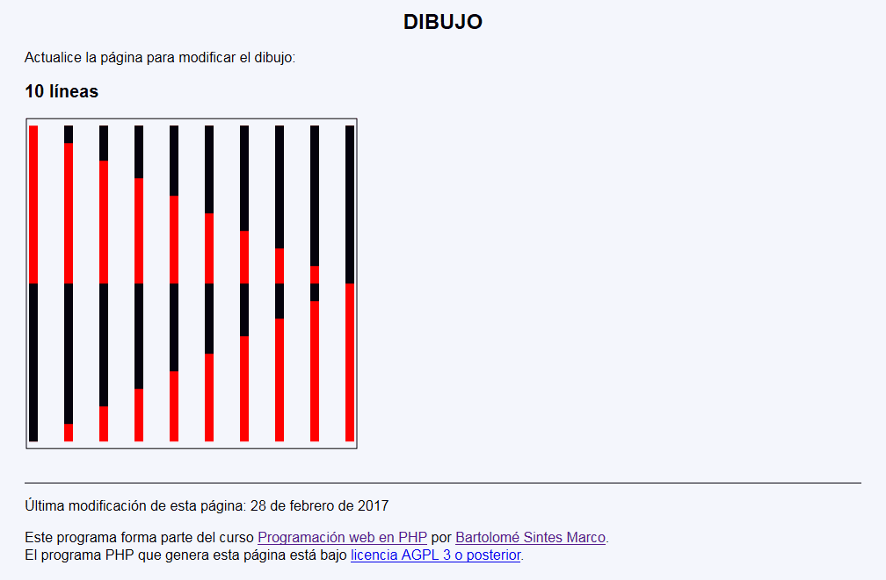

Dibujo - Ejemplo de programa
Nota: El día del examen los alumnos no tienen acceso a este ejemplo, solamente tienen acceso a las capturas del apartado anterior.
Un ejemplo de programa puede probarse en la ventana siguiente:
En este ejercicio se debe crear un programa que muestre un dibujo.


<h2>11 líneas</h2>
<p>
<svg xmlns="http://www.w3.org/2000/svg" width="380" height="380" viewBox="-10 -10 380 380">
<rect x="-8" y="-8" width="376" height="376" fill="none" stroke="black" />
<line x1="0" y1="360" x2="0" y2="0" stroke="red" stroke-width="10" />
<line x1="36" y1="360" x2="36" y2="0" stroke="red" stroke-width="10" />
<line x1="72" y1="360" x2="72" y2="0" stroke="red" stroke-width="10" />
<line x1="108" y1="360" x2="108" y2="0" stroke="red" stroke-width="10" />
<line x1="144" y1="360" x2="144" y2="0" stroke="red" stroke-width="10" />
<line x1="180" y1="360" x2="180" y2="0" stroke="red" stroke-width="10" />
<line x1="216" y1="360" x2="216" y2="0" stroke="red" stroke-width="10" />
<line x1="252" y1="360" x2="252" y2="0" stroke="red" stroke-width="10" />
<line x1="288" y1="360" x2="288" y2="0" stroke="red" stroke-width="10" />
<line x1="324" y1="360" x2="324" y2="0" stroke="red" stroke-width="10" />
<line x1="360" y1="360" x2="360" y2="0" stroke="red" stroke-width="10" />
<line x1="0" y1="360" x2="0" y2="180" stroke="black" stroke-width="10" />
<line x1="36" y1="342" x2="36" y2="180" stroke="black" stroke-width="10" />
<line x1="72" y1="324" x2="72" y2="180" stroke="black" stroke-width="10" />
<line x1="108" y1="306" x2="108" y2="180" stroke="black" stroke-width="10" />
<line x1="144" y1="288" x2="144" y2="180" stroke="black" stroke-width="10" />
<line x1="180" y1="270" x2="180" y2="180" stroke="black" stroke-width="10" />
<line x1="216" y1="252" x2="216" y2="180" stroke="black" stroke-width="10" />
<line x1="252" y1="234" x2="252" y2="180" stroke="black" stroke-width="10" />
<line x1="288" y1="216" x2="288" y2="180" stroke="black" stroke-width="10" />
<line x1="324" y1="198" x2="324" y2="180" stroke="black" stroke-width="10" />
<line x1="360" y1="180" x2="360" y2="180" stroke="black" stroke-width="10" />
<line x1="0" y1="0" x2="0" y2="0" stroke="black" stroke-width="10" />
<line x1="36" y1="0" x2="36" y2="18" stroke="black" stroke-width="10" />
<line x1="72" y1="0" x2="72" y2="36" stroke="black" stroke-width="10" />
<line x1="108" y1="0" x2="108" y2="54" stroke="black" stroke-width="10" />
<line x1="144" y1="0" x2="144" y2="72" stroke="black" stroke-width="10" />
<line x1="180" y1="0" x2="180" y2="90" stroke="black" stroke-width="10" />
<line x1="216" y1="0" x2="216" y2="108" stroke="black" stroke-width="10" />
<line x1="252" y1="0" x2="252" y2="126" stroke="black" stroke-width="10" />
<line x1="288" y1="0" x2="288" y2="144" stroke="black" stroke-width="10" />
<line x1="324" y1="0" x2="324" y2="162" stroke="black" stroke-width="10" />
<line x1="360" y1="0" x2="360" y2="180" stroke="black" stroke-width="10" />
</svg>
</p>
<h2>13 líneas</h2>
<p>
<svg xmlns="http://www.w3.org/2000/svg" width="380" height="380" viewBox="-10 -10 380 380">
<rect x="-8" y="-8" width="376" height="376" fill="none" stroke="black" />
<line x1="0" y1="360" x2="0" y2="0" stroke="red" stroke-width="10" />
<line x1="30" y1="360" x2="30" y2="0" stroke="red" stroke-width="10" />
<line x1="60" y1="360" x2="60" y2="0" stroke="red" stroke-width="10" />
<line x1="90" y1="360" x2="90" y2="0" stroke="red" stroke-width="10" />
<line x1="120" y1="360" x2="120" y2="0" stroke="red" stroke-width="10" />
<line x1="150" y1="360" x2="150" y2="0" stroke="red" stroke-width="10" />
<line x1="180" y1="360" x2="180" y2="0" stroke="red" stroke-width="10" />
<line x1="210" y1="360" x2="210" y2="0" stroke="red" stroke-width="10" />
<line x1="240" y1="360" x2="240" y2="0" stroke="red" stroke-width="10" />
<line x1="270" y1="360" x2="270" y2="0" stroke="red" stroke-width="10" />
<line x1="300" y1="360" x2="300" y2="0" stroke="red" stroke-width="10" />
<line x1="330" y1="360" x2="330" y2="0" stroke="red" stroke-width="10" />
<line x1="360" y1="360" x2="360" y2="0" stroke="red" stroke-width="10" />
<line x1="0" y1="360" x2="0" y2="180" stroke="black" stroke-width="10" />
<line x1="30" y1="345" x2="30" y2="180" stroke="black" stroke-width="10" />
<line x1="60" y1="330" x2="60" y2="180" stroke="black" stroke-width="10" />
<line x1="90" y1="315" x2="90" y2="180" stroke="black" stroke-width="10" />
<line x1="120" y1="300" x2="120" y2="180" stroke="black" stroke-width="10" />
<line x1="150" y1="285" x2="150" y2="180" stroke="black" stroke-width="10" />
<line x1="180" y1="270" x2="180" y2="180" stroke="black" stroke-width="10" />
<line x1="210" y1="255" x2="210" y2="180" stroke="black" stroke-width="10" />
<line x1="240" y1="240" x2="240" y2="180" stroke="black" stroke-width="10" />
<line x1="270" y1="225" x2="270" y2="180" stroke="black" stroke-width="10" />
<line x1="300" y1="210" x2="300" y2="180" stroke="black" stroke-width="10" />
<line x1="330" y1="195" x2="330" y2="180" stroke="black" stroke-width="10" />
<line x1="360" y1="180" x2="360" y2="180" stroke="black" stroke-width="10" />
<line x1="0" y1="0" x2="0" y2="0" stroke="black" stroke-width="10" />
<line x1="30" y1="0" x2="30" y2="15" stroke="black" stroke-width="10" />
<line x1="60" y1="0" x2="60" y2="30" stroke="black" stroke-width="10" />
<line x1="90" y1="0" x2="90" y2="45" stroke="black" stroke-width="10" />
<line x1="120" y1="0" x2="120" y2="60" stroke="black" stroke-width="10" />
<line x1="150" y1="0" x2="150" y2="75" stroke="black" stroke-width="10" />
<line x1="180" y1="0" x2="180" y2="90" stroke="black" stroke-width="10" />
<line x1="210" y1="0" x2="210" y2="105" stroke="black" stroke-width="10" />
<line x1="240" y1="0" x2="240" y2="120" stroke="black" stroke-width="10" />
<line x1="270" y1="0" x2="270" y2="135" stroke="black" stroke-width="10" />
<line x1="300" y1="0" x2="300" y2="150" stroke="black" stroke-width="10" />
<line x1="330" y1="0" x2="330" y2="165" stroke="black" stroke-width="10" />
<line x1="360" y1="0" x2="360" y2="180" stroke="black" stroke-width="10" />
</svg>
</p>
Nota: El día del examen los alumnos no tienen acceso a este ejemplo, solamente tienen acceso a las capturas del apartado anterior.
Un ejemplo de programa puede probarse en la ventana siguiente: